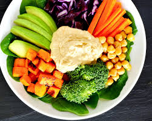

Cooking in progress..

A healthy meal featuring fruit and vegetables can be prepared in less than 30 minutes.
One serve of VEGETABLES is 75 grams

This is a common belief but in fact you can save money when you buy more fruit and vegetables, instead of packaged and ready-to-eat meals and snacks. Compare the cost of fresh fruit with that of fruit snacks per kilogram.
The good news is that tinned and frozen fruit and vegetables are just as nutritious as fresh ones, but make sure you look out for the following at the supermarket:
Start with simple recipes with lots of fruit and/or vegetables. To find more healthy recipes you can create an account and recieve weekly meal plans. You can also check out our four way meals or try our seasonalty where we focus on vegetables during their correct season!
Include your family in the meal planning process by:
There are many different types of fruit and vegetables – they don’t all taste the same! Try new ones – there may be some that you like better than others, but it’s usually just a matter of getting used to the taste.
Entertaining family and friends is an important and enjoyable part of life. Encourage others to eat a variety of fruit and vegetables at your next social occasion. All it takes is planning, enthusiasm and a few ideas (and it can all be done on a budget).
Entertaining family and friends is an important and enjoyable part of life. Encourage others to eat a variety of fruit and vegetables at your next social occasion. All it takes is planning, enthusiasm and a few ideas (and it can all be done on a budget).
Here are a few suggestions of what vegetables work well together and how you can cook them:
- Roasting- Pumpkin, Potatoes, Sweet potato, Red onion.
- Stir-fries - Asian greens (eg. Bok choy), Broccoli, Snow peas, Baby corn, Red capsicum, Green beans, Carrots, Cauliflower.
- Casseroles/pasta sauces Carrots - Mushrooms, Celery, Zucchini, Leeks, Tomatoes, Parsnips, Onion.
- In sandwiches, wraps and burgers -Green salad leaves (eg. Rocket, Cos lettuce), Beetroot, Avocado, Capsicum, Red onion, Tomato, Mushrooms, Carrot.
- Grilling/BBQ Eggplant -Zucchini, Onions, Asparagus, Mushrooms, capsicum, squash.